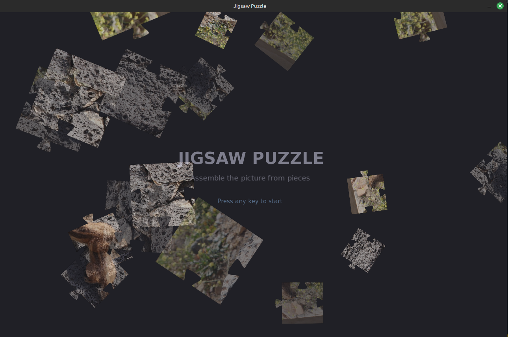
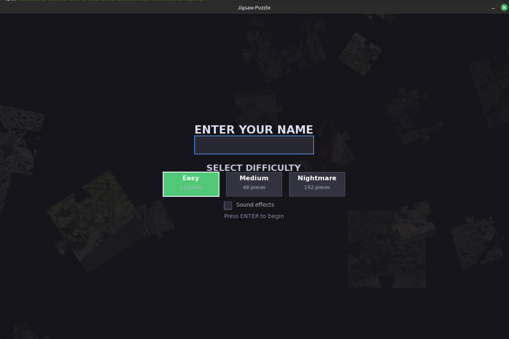
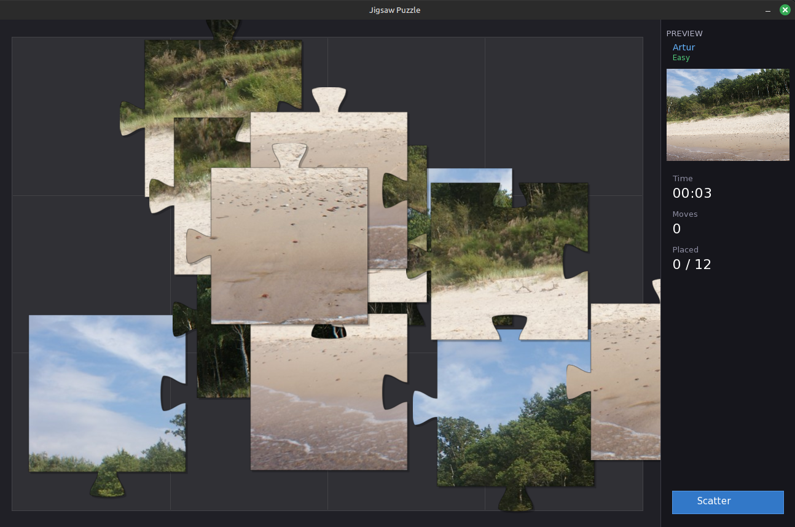
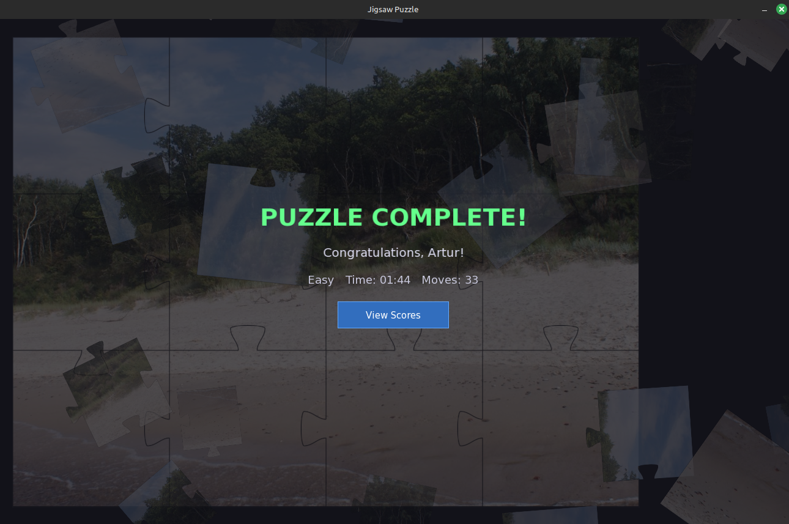
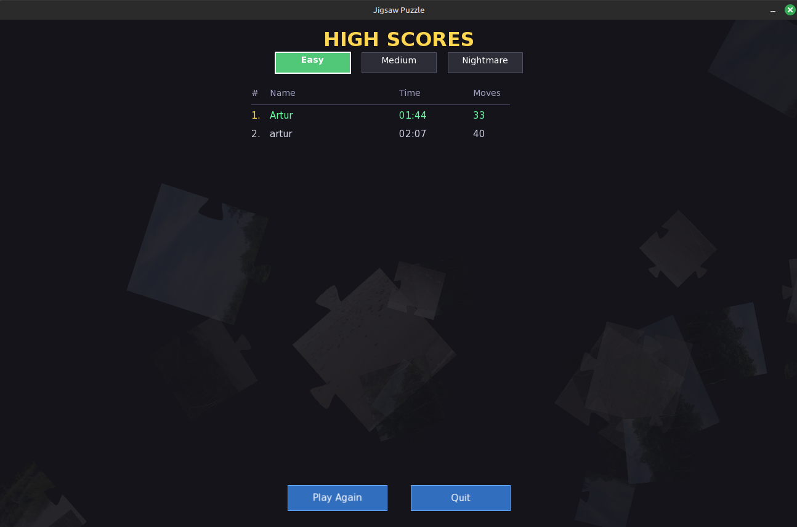

Fully AI-Generated





A desktop jigsaw puzzle game built entirely with AI assistance using C++17, SFML 2.5 for graphics and input, and Cairo for rendering realistic interlocking puzzle pieces via Bezier curves. The game features three escalating difficulty levels — from 12 pieces (Easy) to 192 pieces (Nightmare) — with smooth drag-and-drop gameplay, snap-to-grid alignment, and audio feedback.
Requirements: CMake (3.16+), pkg-config, SFML (2.5+), Cairo (1.16+)
git clone https://github.com/ArturKos/puzzle-AI-game-generated.git cd puzzle-AI-game-generated mkdir build && cd build cmake .. make
Check out the project on GitHub: Jigsaw Puzzle Game on GitHub
Back to Portfolio